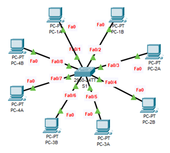

AIM
- Subnet 192.168.10.0/24 into 4 equal subnets
- Identify for each subnet: Network, Broadcast, First & Last Usable, Valid Host Range, Prefix, and Subnet Mask
- Assign IPs to 8 PCs (two per subnet)
- Connect all PCs to a switch and verify with ping — only PCs in the same subnet should communicate
TOPOLOGY

SUBNETTING 192.168.10.0/24 INTO 4 SUBNETS
Original Network: 192.168.10.0/24
Number of Subnets: 4 → Need 2 additional bits for subnetting (22 = 4)
New Subnet Mask: /26 → 255.255.255.192
SUBNET TABLE
| Network Address |
First Usable IP Address |
Broadcast Address |
Last Usable IP Address |
| 192.168.10.0 |
192.168.10.1 |
192.168.10.63 |
192.168.10.62 |
| 192.168.10.64 |
192.168.10.65 |
192.168.10.127 |
192.168.10.126 |
| 192.168.10.128 |
192.168.10.129 |
192.168.10.191 |
192.168.10.190 |
| 192.168.10.192 |
192.168.10.193 |
192.168.10.255 |
192.168.10.254 |
ADDRESSING TABLE
| DEVICE |
IP ADDRESS |
SUBNET MASK |
| PC-1A |
192.168.10.1 |
255.255.255.192 |
| PC-1B |
192.168.10.2 |
255.255.255.192 |
| PC-2A |
192.168.10.65 |
255.255.255.192 |
| PC-2B |
192.168.10.66 |
255.255.255.192 |
| PC-3A |
192.168.10.129 |
255.255.255.192 |
| PC-3B |
192.168.10.130 |
255.255.255.192 |
| PC-4A |
192.168.10.193 |
255.255.255.192 |
| PC-4B |
192.168.10.194 |
255.255.255.192 |
INSTRUCTIONS
Connect all PCs to the switch.
Assign IP addresses to each PC as per the addressing table.
EXPECTED RESULT
PCs within the same subnet can ping each other successfully. (ping 192.168.10.2)
PCs in different subnets cannot communicate (ping fails) because there is no router.
| Ping From |
Ping To |
IP Address |
Ping Result Fail/Success |
| PC-1A |
PC-1B |
192.168.10.2 |
Success |
| PC-2A |
PC-2B |
192.168.10.66 |
Success |
| PC-3A |
PC-3B |
192.168.10.130 |
Success |
| PC-4A |
PC-4B |
192.168.10.194 |
Success |
| PC-1A |
PC-2A |
192.168.10.65 |
Fail |
| PC-1A |
PC-2B |
192.168.10.66 |
Fail |
| PC-1A |
PC-3A |
192.168.10.129 |
Fail |
| PC-1A |
PC-4A |
192.168.10.193 |
Fail |
RESULT:
Configured and verified Configure IPv6 Addressing